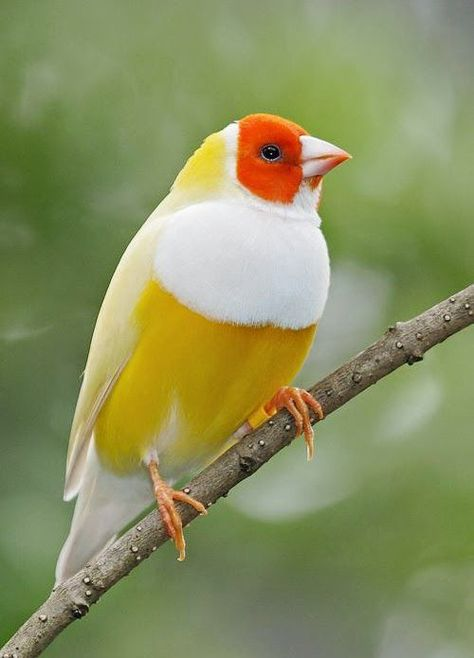

Os cães lideram o ranking, com 58,1 milhões de indivíduos.
Os cães lideram o ranking, com 58,1 milhões de indivíduos. Os cães lideram o ranking, com 58,1 milhões de indivíduos.
 As aves canoras vêm em segundo, com 41 milhões.
 Os gatos figuram em terceiro lugar, com 27,1 milhões, seguidos de perto pelos peixes (20,8 milhões).
Os gatos figuram em terceiro lugar, com 27,1 milhões, seguidos de perto pelos peixes (20,8 milhões).
E depois vêm os pequenos répteis e mamíferos (2,5 milhões). Com base no estudo de fósseis, que esses organismos tenham surgido há cerca de 710 milhões de anos. Durante a história do planeta, muitas espécies surgiram e muitas foram extintas. Como exemplo de animais encontrados atualmente no planeta, podemos citar as esponjas, borboletas, cachorros, gatos, águas-vivas e os seres humanos. Como exemplos daqueles que se extinguiram, podemos citar os dinossauros, mamutes e tigre-dentes-de-sabre."Os animais são seres vivos que possuem algumas características em comum: nascem, desenvolvem-se, reproduzem-se e morrem. O conjunto dessas etapas é chamado de ciclo vital. Eles podem ser classificados em vertebrados, invertebrados, selvagens, domésticos, terrestres, aquáticos, aéreos, entre várias outras formas.
Selvagens são animais que habitam o ecossistema de origem. Já os animais silvestres, segundo a lei n.º 9.605/98, são “espécies nativas, migratórias ou quaisquer outras, aquáticas ou terrestres, que tenham todo ou parte de seu ciclo de vida ocorrendo dentro dos limites do território brasileiro, ou águas jurisdicionais brasileiras”.